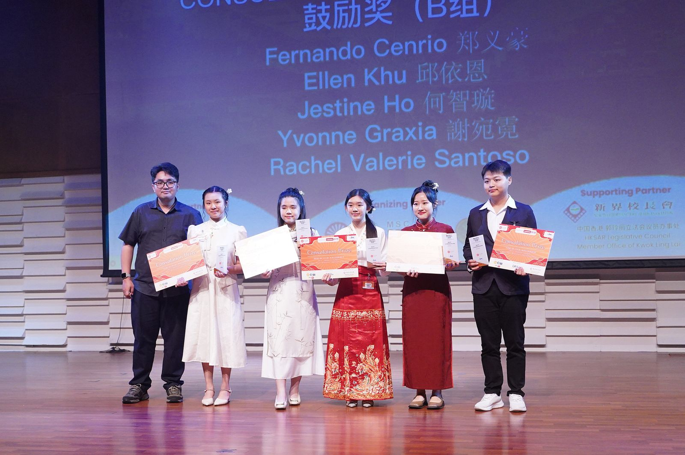

Pentingnya Bahasa Mandarin untuk Bersaing di Era Global
Tiongkok adalah partner dagang utama banyak negara, termasuk Indonesia. Dengan menguasai bahasa Mandarin dapat membuka peluang karir bergaji tinggi, memperluas jaringan bisnis internasional, dan dapat merangsang perkembangan otak karena karakter dan nada yang unik, membantu menambah kemampuan memori dan berpikir kritis.
Sebuah kompetisi membaca puisi berbahasa Mandarin, diresmikan oleh ChineseRd, lembaga kursus bahasa Mandarin asal Tiongkok bekerja sama dengan Universitas Bunda Mulia (UBM), Jakarta.
Gen Z dan AI : Tips Bijak Memanfaatkan "Akal Imitasi"
Gen Z sering Memanfaatkan AI dalam membantu tugas perkuliahan, mencari ide kreatif, hingga sekadar mengobrol.
Namun, dibalik kemudahan yang ditawari AI, terdapat kekhawatiran terhadap dampak yang ditimbulkan akibat sering menggunakan AI.
Berdasarkan penilaian dari Guru Besar UGM dan Pemerhati Rekayasa Perangkat Lunak, Prof. Ridi Ferdiana, meningkatnya penggunaan AI di kalangan anak muda merupakan suatu hal yang tidak bisa dihindari bagi generasi yang tumbuh di lingkungan digital tersebut.
Prof Ridi menekankan generasi muda perlu bijak dalam menggunakan AI agar tidak sepenuhnya dikendalikan oleh AI. Ia memperkenalkan tiga prinsip penting sebagai pedoman etika dan literasi digital generasi muda, yaitu konsep ERA.
Penggunaan Bus Trans Manado Untuk Aktivitas Sehari-hari
Setelah sempat terhenti karena penolakan dari sopir angkutan umum, layanan Bus Trans Manado akhirnya kembali beroperasi. Kehadiran bus ini digadang-gadang oleh Pemerintah Kota Manado sebagai salah satu solusi untuk mengurangi kemacetan di pusat kota dengan menyediakan opsi transportasi yang aman dan nyaman bagi warganya.
Pentingnya Kecakapan Antar Personal di Dunia IT
Bagi saya, menguasai keterampilan teknis seperti pemrograman dan jaringan memang sangat penting. Namun, kemampuan untuk berkomunikasi, bekerja sama dalam tim, dan mempresentasikan ide juga tidak kalah krusial di dunia profesional nantinya.
Melalui mata kuliah Kecakapan Antar Personal, saya belajar bagaimana membangun citra diri yang baik dan berkomunikasi secara efektif. Berikut adalah video perkenalan diri singkat yang saya buat: